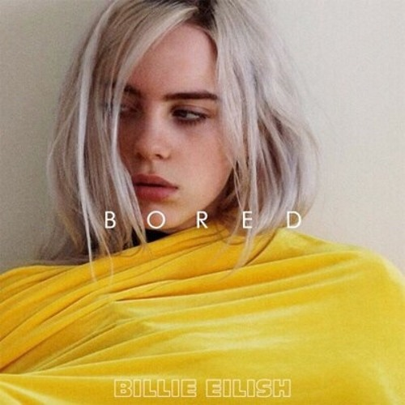
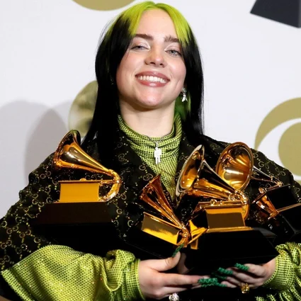
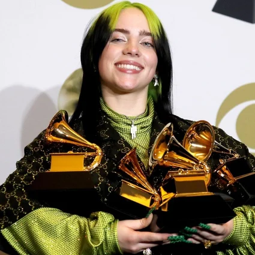

Her first song was initially for dance classes, but she put it on SoundCloud with the help of her brother Finneas, and officially released Ocean Eyes, her first song and hit single, in 2016.
2016: the year of humble beginnings





 
